MY FAV LINKS

Tune in for TOO CUTE and witness the world of pupppies and Kittens as they never have before with inprecedented footage and never-before-seen clips of the early lives of dogs and cats. This series contains material that is just too cute! It is a world where cuddly knows no bonds and a place where fluffy reigns supreme.First up pupppies, a light-hearted, high-end nature documentary that follows the birth and First months of three distinct Puppy litters from the puppies' prespectives... Visit Website.

Founded in 1866, the ASPCA was the first humane organization in the Western Hemisphere. Our mission, as stated by founder Henry Bergh, is to provide effective means for the prevention of cruelty to animals throughout the United States. While there are SPCAs and humane societies all over the country,the ASPCA is not directly affiliated with them. However, the ASPCA works nationally to rescue animals from abuse, pass humane laws and share resources with many shelters across the country... Visit Website.
From London to the Jersey shore, Cesar travels far and wide this season to help problem pups, including those of Kelsey Grammer, Jillian Michaels and Hugh Hefner. Watch as Cesar rehabilitates dogs and trains people to achieve a balanced and natural relationship between humans and their pets... Visit Website.